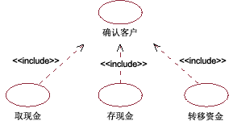
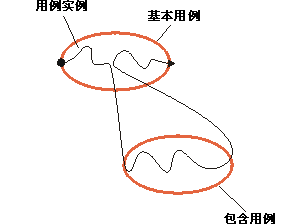
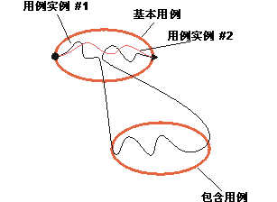
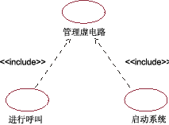

| 指南：包含关系 |
 |
|
说明包含关系将基本用例和包含用例连接起来。包含用例始终是抽象的。它描述一个行为段，该行为段要插入到执行基本用例的用例实例中。基本用例控制着与包含用例的关系，并可能依靠执行包含用例的结果，但基本用例和包含用例均不能访问对方的属性。 包含用例是以这种意义封装起来的，且代表了可在不同的基本用例中重用的行为。 您可以使用包含关系：
示例： 在 ATM 系统中，用例“取出现金”、“存入现金”和“转帐”都需要包括如何将客户标识到系统。 该行为可以抽取到一个称为“标识客户”的新包含用例中，而以上三个基本用例均包含此用例。 这些基本用例不依赖于标识方法，因此该方法封装在包含用例中。 从基本用例的角度来看，它们并不关心标识方法是读取银行磁卡还是执行视网膜扫描。 它们只依赖于“标识客户”的结果，即客户的身份。 反之亦然，从“标识客户”用例的角度来看，不管基本用例如何使用客户身份，或者在执行包含之前基本用例发生了什么 － 标识方法仍是全然一样的。  在 ATM 系统中，用例“取出现金”、“存入现金”和“转帐”都包含用例“标识客户”。 一个基本用例可以包含多项。一个包含用例可以包含在多个基本用例中。这并不表示这些基本用例之间有任何关系。 甚至在同一个包含用例和基本用例之间也可以有多个包含关系，前提是包含项插入到基本用例中的不同位置。位置由包含关系定义。 所有添加项均可以嵌套，这意味着一个包含用例可以充当另一个包含用例的基本用例。 由于包含用例是抽象的，因此它不需要有与之关联的参与者。 只有在包含用例中的行为明确涉及到与某一参与者的交互的情况下，才需要与参与者的通信关联。 执行包含用例包含用例的行为会插入到基本用例中的一个位置。如果遵循某一基本用例描述的某一用例实例到达基本用例中的某个位置，从该位置定义包含关系，该用例实例将转而遵循该包含用例的描述。 一旦执行了包含用例，该用例实例将从它在基本用例中停止的位置重新继续。  遵循基本用例（包括其包含用例）描述的用例实例。 包含关系是无条件的：如果用例实例到达某一基本用例（该用例实例是为其定义的）中的位置，则始终执行该用例实例。 如果要表达一个条件，则需要将其作为基本用例的一部分来表达。如果用例实例从未到达定义了包含关系的位置，则不会执行该用例实例。  用例实例 #1 到达基本用例中定义了包含关系的位置，执行该包含用例。 用例实例 #2 不到达该位置，因此包含用例不会作为该实例的一部分执行。 包含用例是一个连续的行为段，其中的所有行为均包含在基本用例中的一个位置。 如果您有需要插入到不同位置的几个单独行为段，则应转而考虑扩展关系（请参阅工作产品指南：扩展关系）或用例泛化关系（请参阅工作产品指南：用例泛化关系）。 描述包含关系对于包含关系，您应在基本用例的行为序列中定义要插入包含用例的位置。 可通过引用特定的步骤或引用基本用例的事件流内的子流来定义该位置。 示例： 在 ATM 系统中，用例“取出现金”包含用例“标识客户”。从“取出现金”到“标识客户”的包含关系可描述如下： “标识客户”插入到“取出现金”的事件流中第 1.1 部分“用例开始”和第 1.2 部分“要求金额”之间。 为了清楚起见，您还应在描述基本用例的事件流的文本中提及该包含用例。 使用示例如果用例中有这样一个行为段，您能看到该用例不依赖于执行功能的方式，而是依赖于功能的结果，则您可以简化该用例，方法是将此行为抽取到一个包含用例中。 该包含用例可以包含在多个基本用例中，这意味着允许您在模型的多个用例中重用行为。 对于简单电话系统的用例，考虑以下分步概述： 拨打电话
启动系统
以蓝色列出的文本很类似；我们在这两种情况下执行相同的行为，而执行的原因却大相径庭。 可以利用这种相似性，并将共同的行为抽取到新用例中，称为“管理虚电路”。 一旦抽取了共同的行为，用例就变成： 拨打电话
启动系统
在用例图中，已创建的包含关系将作如下说明：  用例“拨打电话”和“启动系统”都包含抽象用例“管理虚电路”的行为。 |
© Copyright IBM Corp. 1987, 2006. All Rights Reserved. |